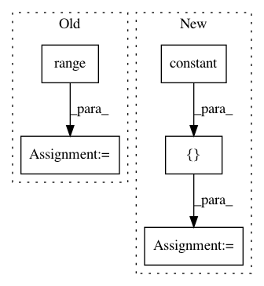

a0f77cc8b87512e691a7c22b6fb9ba60f603b632,layer/reparameterization_trick.py,ReparameterizationLayer,layer_op,#ReparameterizationLayer#Any#,36
Before Change
noise_sample = noise_like(means, self.prior)
else:
stochastic_parts = []
for p in range(0, self.number_of_samples):
stochastic_parts.append(noise_like(means, self.prior))
noise_sample = tf.reduce_mean(tf.stack(stochastic_parts), axis=0)
output_tensor = means + tf.exp(0.5 * logvariances) * noise_sample
After Change
if self.number_of_samples == 1:
noise_sample = noise_shaped_like(tf.shape(means), self.prior)
else:
shape_of_expanded_sample = tf.concat([tf.constant(self.number_of_samples, shape=[1, ]), tf.shape(means)], 0)
noise_sample = noise_shaped_like(shape_of_expanded_sample, self.prior)
noise_sample = tf.reduce_mean(noise_sample, axis=0)
return means + tf.exp(0.5 * logvariances) * noise_sample
In pattern: SUPERPATTERN
Frequency: 3
Non-data size: 5
Instances
Project Name: NifTK/NiftyNet
Commit Name: a0f77cc8b87512e691a7c22b6fb9ba60f603b632
Time: 2017-07-04
Author: r.gray@ucl.ac.uk
File Name: layer/reparameterization_trick.py
Class Name: ReparameterizationLayer
Method Name: layer_op
Project Name: tensorflow/tpu
Commit Name: 0638b9c86cfec273b2e5799aea281ffa74d9161d
Time: 2020-05-12
Author: pengchong@google.com
File Name: models/official/detection/serving/inputs.py
Class Name:
Method Name: raw_image_tensor_input
Project Name: XifengGuo/CapsNet-Keras
Commit Name: 5cb43a9498315a16412cba20a59e6e76f9721b7b
Time: 2017-10-31
Author: guoxifeng1990@163.com
File Name: capsulelayers.py
Class Name: CapsuleLayer
Method Name: call